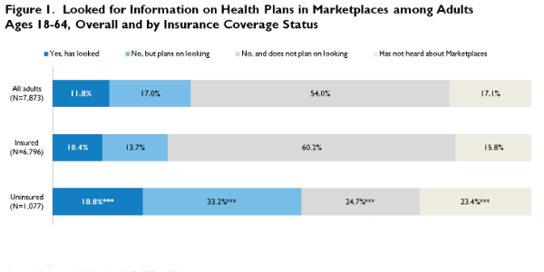

|  |
|
|||||||||||||||||||||||||||||||||||||||||||||||||||||||||||||||||||||||||||||||||||||||||||||||||||||||||||||||||||||||||||||||||||||||||||||||||||||||||
Who among the Uninsured Do Not Plan to Look for Health Insurance in the ACA Marketplaces?
Bowen Garrett, Lisa Clemans-Cope, Katherine Hempstead, and Nathaniel AndersonMarch 21, 2014
New enrollment figures for both state and federal health insurance Marketplaces created by the Affordable Care Act (ACA) show that participation is picking up steam after a slow start, with data as of March 17, 2014 reflecting 5 million enrolled.1 But with open enrollment closing on March 31, the pace of enrollment will need to accelerate further to reach the revised target of 6 million people.2 Previous research suggests that the initial low levels of Marketplace enrollment were driven as much by gaps in awareness of the ACA’s coverage provisions as by the widely publicized problems with the federal website. For example, only about one-third of adults had heard some or a lot about the Marketplaces on the eve of the Marketplace rollout (Long and Goin 2014). By December 2013, about one-fifth of uninsured adults had looked at that time and another third planned to look (Blavin et al. 2014). Additional research finds that many uninsured are not looking for coverage in the Marketplaces because they are unaware that financial help is available there.3
What We Did
This brief draws on data collected in the December 2013 wave of the Health Reform Monitoring Survey (HRMS), the third month following the rollout of the Marketplaces. The survey asked a sample of nonelderly adults (age 18–64) how much, if anything, they had heard about the Marketplaces. Respondents who had heard about the Marketplaces were then asked if they had looked there for health plan information. We examine results by insurance status at the time of the survey and then focus on those who were uninsured. This brief identifies the socioeconomic and demographic characteristics of those who are less likely to enroll by comparing two groups of uninsured adults to those who had looked or planned to look for health plan information in the Marketplaces during the first two to three months of the rollout: (1) those who did not plan to look and (2) those who had not heard about the Marketplaces.
We report responses by age (18–34, 35–49, and 50–64), race/ethnicity, current employment status (employed, self-employed, or not employed), and three categories of family income (lower-income families, defined as those with incomes below 138 percent of the federal poverty level [FPL], which is the income cutoff for Medicaid eligibility in states opting for Medicaid expansion under the ACA; middle-income families, defined as those with incomes between 138 and 399 percent of FPL, which is the income cutoff for eligibility for the subsidies (tax credits) available in Marketplace plans; and higher-income families, defined as those with incomes at or above 400 percent of the FPL). We also examine responses by gender, marital status, region, self-reported health status (excellent, very good, or good versus fair or poor), and days in poor mental health in last 30 days (0 or 1 day versus 2 days or more).
Finally, we examine the main reasons why uninsured respondents said they did not plan to look for coverage in the Marketplaces. This question had five response categories plus a fill-in text box option: (1) I am satisfied with my existing health insurance, (2) I do not want health insurance, (3) I do not have the time, (4) I do not know how to find the information, (5) The website has not been working, and (6) Other (fill-in text).
What We Found
While the uninsured were more likely to plan on looking for information in the Marketplaces compared with the insured, 48 percent of uninsured respondents did not plan on looking for information in the Marketplaces or had not heard about them. Among all adults age 18 to 64, 11.8 percent had looked for information on health plans in the Marketplaces, and 17.0 percent had not looked but said they planned on looking (figure 1).4 Slightly over half of all adults (54.0 percent) had not looked and did not plan on looking, while 17.1 percent had not heard about the Marketplaces. Comparing responses by insurance status, we find the uninsured were more likely to have looked than the insured (18.8 versus 10.4 percent), and also more likely to say they planned on looking (33.2 versus 13.7 percent). The uninsured were more engaged and less likely to say they did not plan on looking than the insured (24.7 versus 60.2 percent), which is to be expected because many insured are satisfied with their existing coverage and have less reason to look in the Marketplaces.5 However, the uninsured were more likely than the insured to say they had not heard about the Marketplaces (23.4 versus 15.8 percent). In total, 48 percent of the uninsured were unlikely to seek health insurance information in the Marketplaces because they did not plan to look or were unaware of them.
Uninsured respondents who did not plan on looking for information in the Marketplaces were more likely to be white/non-Hispanic and not employed than those who had looked or planned on looking. Compared with the uninsured who had looked or were planning on looking in the Marketplaces, those who did not plan on looking were more likely to be white, non-Hispanic (59.5 versus 46.3 percent) and not employed (55.4 versus 39.1 percent [table 1]). They were also more likely to live in the Midwest (24.7 versus 16.5 percent [not shown in table]). There were no statistically significant differences between the two uninsured groups by age or income. There also were no significant differences by gender, marital status, self-reported health status, or days in poor mental health in last 30 days (not shown in table).
The uninsured who were unaware of the Marketplaces were more likely to be younger, Hispanic, not working, and have lower income than other uninsured. Compared with the uninsured who had looked or were planning on looking in the Marketplaces, those who were unaware of the Marketplaces were more likely to be in the 18- to 34-year-old age group (63.6 versus 45.1 percent), Hispanic (41.0 versus 30.2 percent), not employed (71.1 versus 39.1 percent), and in the lower-income group (73.8 versus 61.3 percent, table 1). Those who were unaware of the Marketplaces were also more likely to be female (57.2 versus 50.8 percent, not shown in table). Differences by marital status, region, health status, and days in poor mental health in last 30 days were either statistically insignificant or small (not shown in table). We caution that the sample size for the uninsured who were unaware of the Marketplaces is low (N=205), but no other data source provides comparable information for this important subgroup.
Almost half (44 percent) of the uninsured who have heard of the Marketplaces but say they did not plan to look for coverage gave reasons that indicate that additional enrollment support and information about the availability of subsidized coverage could motivate them to seek coverage. Of the 44 percent, 17.5 percent said that the cost was too high, 11.9 percent said the website had not been working, 9.4 percent they did not know how to find information, and 5.3 percent said they did not have the time to look.
Among the uninsured who were aware of the Marketplaces but did not plan on looking for health insurance information there, the most cited reason was that they did not want health insurance (23.2 percent [figure 2]). Combining the 23.2 percent who did not want health insurance with the 10.8 percent who were satisfied with their existing health insurance (i.e., being uninsured) and the 5.4 percent reporting anti-ACA sentiment, it appears that nearly 40 percent of the uninsured who were not looking in the Marketplaces appeared resistant to obtaining coverage through them.
What It Means
Among the uninsured—the primary target population of the ACA—awareness of and interest in the new coverage opportunities are far from universal. Only half of the uninsured reported in December 2013 that they had looked or planned on looking for information in the Marketplaces. Of these, about 60 percent had not yet done so. The other half of the uninsured reported that they were either unaware of the Marketplaces or did not plan on looking in them.
The findings reveal important differences among these segments of the uninsured population. Given the limited resources for ACA outreach and enrollment, it is crucial to understand the characteristics of the target population of uninsured who remain unaware and uninvolved with the coverage opportunities provided by the ACA. Of the three groups of uninsured we examined, those who have not heard of the Marketplaces are the most demographically distinct. Outreach strategies targeted at these young and Hispanic low-income populations are essential to building awareness of likely eligibility for Medicaid or subsidies (tax credits) for Marketplace coverage.
Low rates of employment among the uninsured who are unaware of the Marketplaces, as well as those not looking, suggest that (1) outreach and education strategies about subsidized coverage options could promisingly be linked to community and neighborhood groups that focus on assisting the unemployed, and (2) linking unemployment insurance benefits to information on subsidized coverage options might be a fruitful way of increasing ACA enrollment among the uninsured.
Cost was the second most common reason for not looking in the Marketplaces among the uninsured who did not plan on looking for coverage. This response suggests that these uninsured, who are likely to have low incomes, are unaware of the availability of subsidized options such as Medicaid or Marketplace tax credits. However, the shares of the uninsured who are eligible for enrollment assistance through either Medicaid or subsidized Marketplace coverage is high, ranging from 34 to 53 percent among states not planning to expand Medicaid eligibility, and from 59 to 81 percent among states that have accepted the ACA’s Medicaid expansion option (Buettgens et al. 2013). Many of these uninsured would likely discover they are eligible for premium subsidies if they were to check through the Marketplaces. Others might learn they are eligible for Medicaid as a result of the “no wrong door” policy, where applicants for health insurance coverage are supposed to be seamlessly routed to the coverage assistance program for which they are eligible. With about half of the uninsured looking at information in the Marketplaces, and many eligible for Medicaid, full implementation of “no wrong door” policies will be important.
More broadly, as these findings highlight, barriers to enrollment among the uninsured go far beyond a lack of information. Enrollment efforts will need to motivate those putting off looking at their coverage options before this year’s deadline or next year’s open enrollment period, encourage those turned off by initial website problems to try again, overcome misperceptions about upfront costs, and engage disconnected populations. While there is a segment of the uninsured who place little value on health insurance, many who currently do not plan to look in the Marketplaces could be persuaded to consider their coverage options with additional support and information.
References
Buettgens, Matthew, Genevieve M. Kenney, Hannah Recht, and Victoria Lynch. 2013. “Eligibility for Assistance and Projected Changes in Coverage Under the ACA: Variation Across States.” Washington, DC: Urban Institute.
Blavin, Fredric, Stephen Zuckerman, and Michael Karpman. 2014. “Who Has Been Looking for Information in the ACA Marketplaces? Why? And How?” Washington, DC: Urban Institute.
Long, Sharon K., and Dana Goin. 2014. “Most Adults Are Not Aware of Health Reform’s Coverage Provisions.” Washington, DC: Urban Institute.
About the Series
This brief is part of a series drawing on the Health Reform Monitoring Survey (HRMS), a quarterly survey of the nonelderly population that is exploring the value of cutting-edge Internet-based survey methods to monitor the Affordable Care Act (ACA) before data from federal government surveys are available. The briefs provide information on health insurance coverage, access to and use of health care, health care affordability, and self-reported health status, as well as timely data on important implementation issues under the ACA. Funding for the core HRMS is provided by the Robert Wood Johnson Foundation, the Ford Foundation, and the Urban Institute.
For more information on the HRMS and for other briefs in this series, visit www.urban.org/hrms.
About the Authors
Bowen Garrett is a senior fellow, Lisa Clemans-Cope is a senior research associate, and Nathaniel Anderson is a research assistant in the Urban Institute’s Health Policy Center. Katherine Hempstead is a senior program officer at the Robert Wood Johnson Foundation.
The authors gratefully acknowledge the suggestions and assistance of Frederick Blavin, Genevieve Kenney, Sharon Long, and Stephen Zuckerman.
Note 1 Marilyn Tavenner, "Marketplace Enrollment Hits 5 Million Milestone," March 17, 2014. In addition, some 8.9 million individuals were determined eligible for Medicaid or CHIP between October 2013 and January 2014 through state-based Marketplaces and state agencies (see “Medicaid and CHIP: January 2014 Monthly Applications and Eligibility Determinations Report,” Centers for Medicare and Medicaid Services, February 28, 2014). 2Congressional Budget Office. “Appendix B: Updated Estimates of the Insurance Coverage Provisions of the Affordable Care Act,” accessed March 14, 2014. 3William Tomasko. “New Survey Results: It’s Lack of Awareness of Financial Help—Not Website Problems—That Has Kept Many Consumers from Getting Covered,” Enroll America blog, January 9 2014. 4For additional information on this data by insurance type, as well as an examination of the reasons that respondents gave for looking for information in the Marketplaces, see Blavin et al. (2014). 5Among the insured who were aware of the Marketplaces but did not plan to look in them, the most cited reason for not looking was that they were satisfied with their existing health insurance (given by 90.0 percent). 6 “Kaiser Health Tracking Poll: June 2013.” Kaiser Family Foundation, accessed March 5, 2014. |
||||||||||||||||||||||||||||||||||||||||||||||||||||||||||||||||||||||||||||||||||||||||||||||||||||||||||||||||||||||||||||||||||||||||||||||||||||||||||


 |
 |
 |